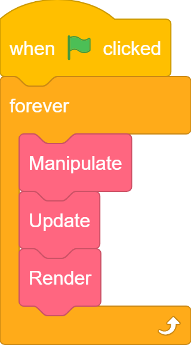
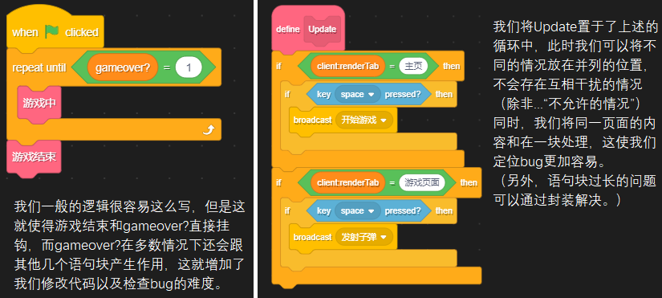
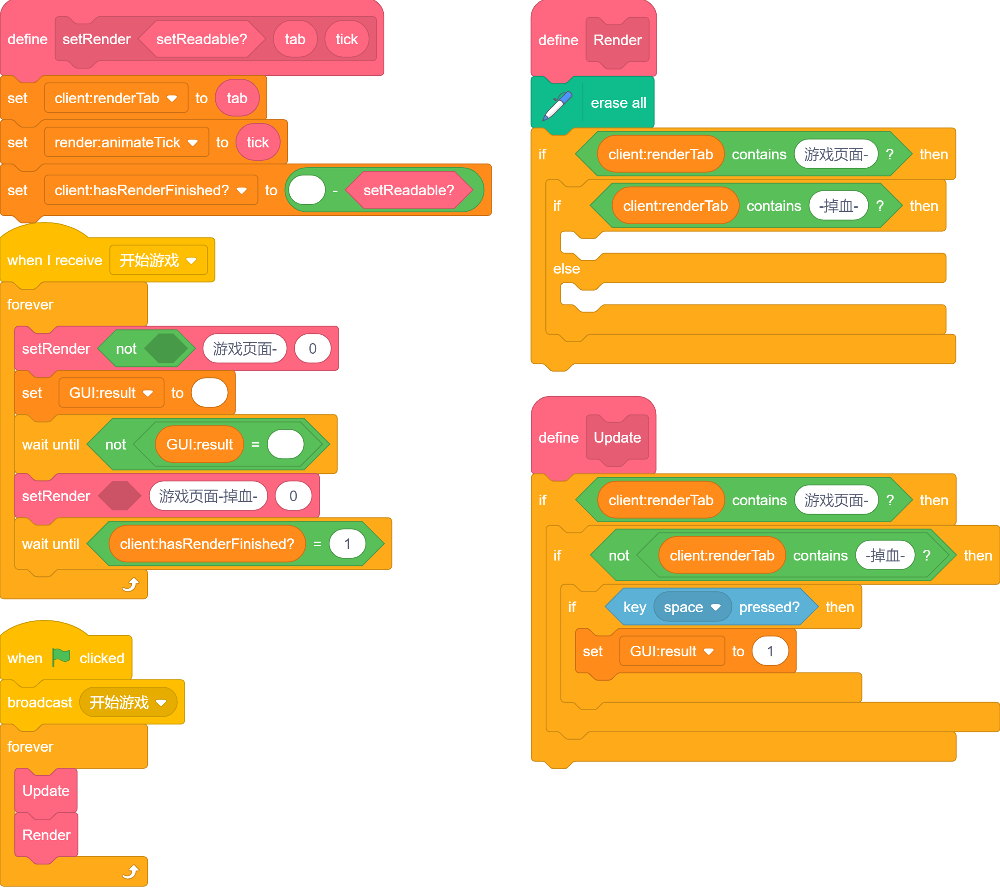
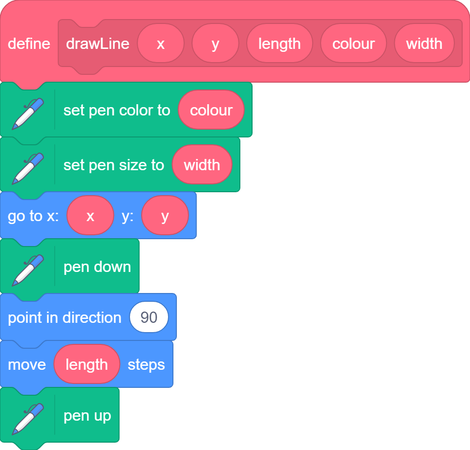
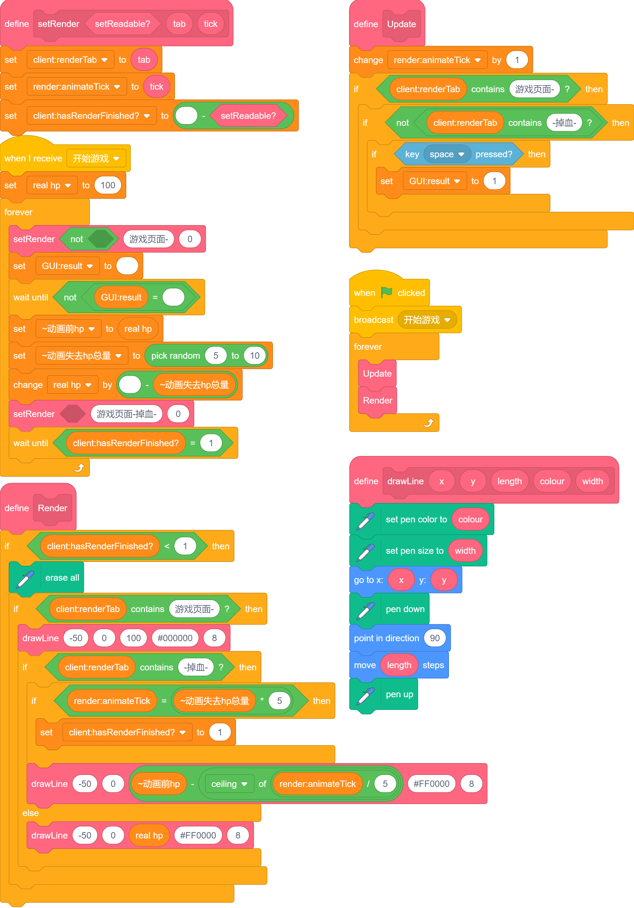
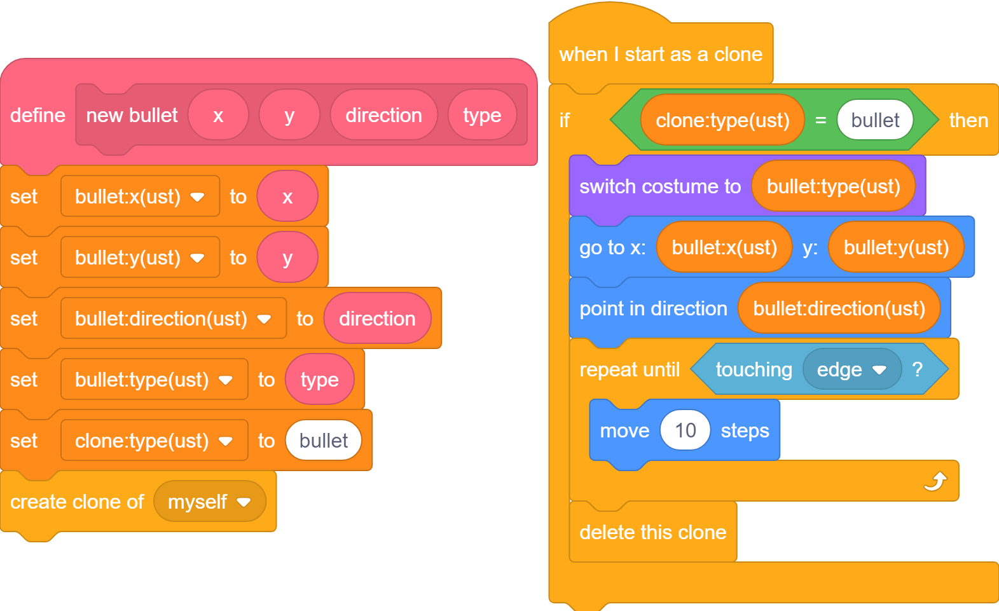
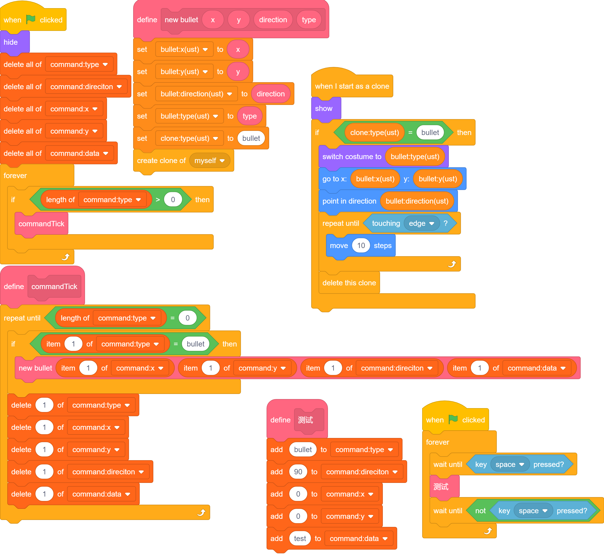

URM
updates renders manipulates
引入
简单来说，URM就是 UnknownResourceMachine 更新、渲染 和 控制
正常来说把三个部分放到一个循环里即可。
 三个函数里放置分别的函数，这个在格式部分讲述。
格式部分不知道在哪放，于是一直没写。
不过，一般使用时，我们并不显式的使用 控制，而是将其拆分为操作部分和非操作部分（对应检测键鼠输入）。
检测部分详见操作封装。
非操作部分一般使用单独的循环或广播，这将在下方提及。
更新部分 Updates
这部分主要负责的是内容更新，例如游戏帧更新、AI运行、根据操作部分获取的输入执行相关内容...等。
虽然说目前没必要将Updates和Renderers分得太死，但是你将会知道它的用处。
既然我首先提及的架构是这个，那它一定有一定的优势（以免无聊到使人看不下去）。
我们将隆重引入...
client:renderTab 换个你更能看懂的：当前渲染页面
我来举个例子说明她（对，她。）的伟大。（这里使用最原始的写法，一会我们会对其进行拓展。）

1
很好！我们现在利用这位至高无上的变量取得了没有任何成果（我是说目前）。 因为一个非常小的问题就能难住它：如果是游戏页面，如何简便地区分关卡？如何简便地实现“物品栏”等上层半覆盖页面？
经过大量尝试与比较，我最终得出的结论是：
- 对于同源而不同的页面，我们采用二级字符串；
- 对于同页面的复杂信息，我们采用全局变量。
举例：战斗页面实现掉血，为了测试掉血的有效性，我们采用键盘触发的方式执行掉血的功能。掉血需要有动画。

如你所见，我们没有写渲染部分，但是 我知道你们一定自己会写 我们会放在下一部分提及他们。
包含语句和特殊命名过的 client:renderTab 对应上述的二级字符串。简单来说：第一串字母和第一个-（随便你用什么，我喜欢用短横线）标识了第一级字符串；后序的每串字母由-隔开，分别作为第二级（不分前后）。
二级字符串判断时需要判断包含 <-name->，即两侧均需要输入短横线，name是你设置的状态。
这同时意味着我们需要复杂化第一级字符串避免出现 adGui 和 breadGui 这样后者包含前者的情况，但我相信利大于弊。
需要指出的是，我们声明了 client:hasRenderFinished? 用于标识当前的状态（主要提供给M）；而GUI:result 用于向 M 提供状态。（由于 U 一定存在于本体，而 M 不一定，我们必须使用全局变量表示他们，详情见此）
render:animateTick是什么？你把他忘了！
好吧，下个章节再说
这里我们需要明确Updates和Manipulates基本的交互（下称U/M，同理Renders称为R）：
U负责与控制模块交互，并将状态信息返回M
M以其 与"U,R循环"隔开 的特性（如之前所说），可以使用等待模块等U无法使用的模块
等我们明确Renders的作用后，我们会再来提及Updates。
相信在看了这么多，你一定有所收获。
不，我说真的。
渲染部分 Renders
渲染部分我们一般使用图章及画笔，图章为主。
或者你可以使用克隆池，这里不多赘述。不过，多彩造型还是值得一试的。
其他话就不多说了，让我们直接开始吧。
接着Updates部分，为了方便显示血条，我们封装一个函数：

然后就很好写出Render部分的代码了：

点此测试
接下来我们会对该部分代码进行详细的剖析，虽然它非常的简单。毕竟用这架构两年了
我是剖析
呃。是又如何？不是又如何？
drawLine
没什么可说的，随便封装了下。
setRender
切换状态最常用的函数之一。经常存在不同的写法，这种是最全的一种。
可以选择设置一些默认状态，详见我的函数命名规则。
不过，如果需要页面间的切换动画，我们还有另一种写法，这需要 blackscreen:点我，我一般将其称为setRenderTab。但一般使用的还是setRender。
Update
添加了帧动画的更新tick。
render:animateTick：“你总算想起我了！”
开始游戏
添加了切换动画前的准备工作：设置两个~开头的变量，其意义详见命名规则。
呃，过了这篇就不再管命名规则什么的了吧，看不懂又不是我的事。
由于sc的特性，这些模块会在同一帧（姑且这么叫吧，会有不同的）执行，所以不会出现预料之外的动画，除非你用了特定模块。（详见跳帧）。
好吧，我承认我的讲述引用了后序的部分，不过这不重要！...但愿吧。
值得注意的是，我的代码偶尔会混杂空格和空白，这是必要的，但我一定会去作说明。
GUI:result的值在监听状态下一定为空，一般得到的值非空。
总之，得到GUI:result的值后，它会随机造成伤害并开启动画。
Render
到了我们的重头戏。
添加的这个选择语句用于避免帧间删除画面，而setRender中设定的值均满足条件，那很容易就有疑惑：究竟 setReadable? 是干什么的？
呃，很简单，你不用知道。 这在操作封装中有所说明。
好了，接下来我们看中间的部分，我们在 游戏页面 讨论了两种情况，而有~的变量的作用于仅在其应在的页面中。
我们很容易就能注意到：每个页面的错误，仅仅会在那个页面找到（废话！）。
嗯...我想说的是，我们可以快速锁定报错位置及原因。（搭配Turbowarp搜索功能食用更佳！）
绿旗
应该没有人不知道绿旗吧？
这条的意义究竟是什么...
总结
URM的大致架构 不是XRJ大神的作品，XRJ先生请不要生气 就是这样了，我接下来会补充一些 没什么必要 拓展的内容。
广播的new usages和Events的引入
广播是广播，事件是事件。
你会发现我上面的代码使用的M是广播实现的，而不是循环，它的优势很多，当然也存在劣势。
优势其一如上所说，能运行持续多帧的运算等。
其二对我来说没什么用，但喜欢克隆体的可能会比较喜欢（都用URM了用什么克隆体！？ 一会就打自己脸 ）。
其三...好像没了。
不过广播架构起源甚早，作为最容易的开线程方式，长时间为人所使用。如果使用不当，也会bug连连。
广播的劣势
你说得对，但是我一般不用广播。
广播劣势有三：
1. 不能传参及获取返回值。
2. 不能多线程同对象（对象=角色/克隆体）调用同一广播。
3. 不便指定运行先后顺序，详见跳帧
为了解决第一项，我们可以指定列表、变量，但这显然不好写。其实是我不会
第二项和第三项是广播的固有矛盾，我们解决不了。
于是我开发了用克隆体代替广播的方案，而后序的进一步对其的探索和开发告诉我，这是对的~虽然容易炸克隆体上限。~
前身之 子弹封装
众所周知，射击游戏很好做，在迷宫游戏或者跑酷游戏上套壳即可。
其中用到的一个关键部分类似这样：

众所周知，ust是unstatic，意味着"私有"。无论私有还是公共，变量会传递给克隆出的克隆体，那么我们可以仿照她（对，她）构思我们需要的方案。
于是就产生了：
前身之 command列表
本质上是子弹封装的实际运行。
 点此测试
此时，我们完成了“广播”的发送。要做到事件，我们还需要进一步开发，详见事件
结语
这个引擎不需要任何sc底层知识，老少咸宜，如果你看完一遍没有看懂，还是去老老实实学文化课吧 其实不算奇怪，毕竟我写的就挺莫名其妙的。最关键的是要去实践。
-
我知道黑色背景显得不是很适合，但我实在懒得把里面的字拿出来了 ↩